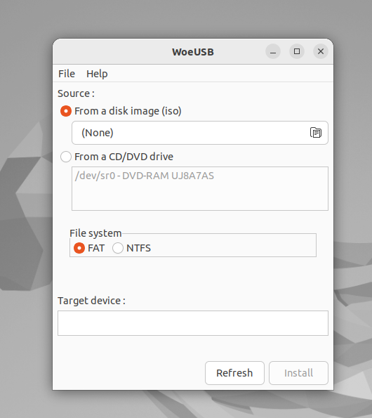
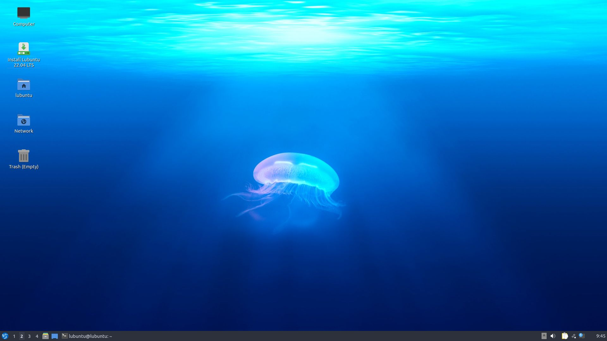
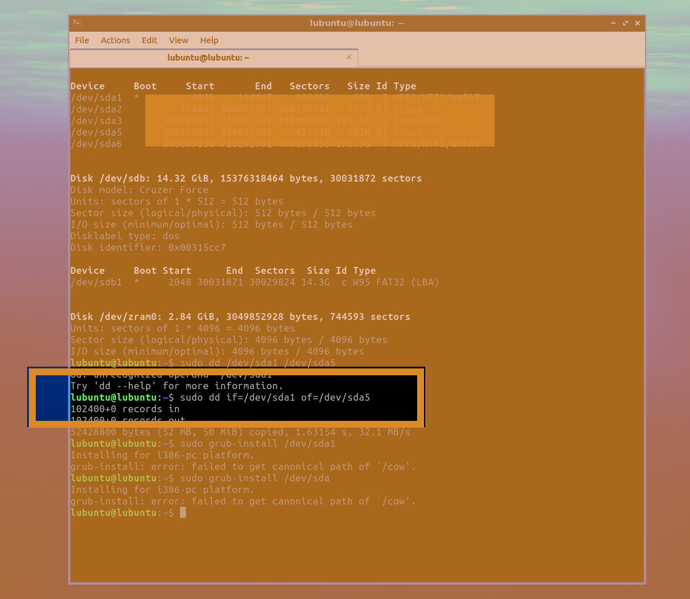
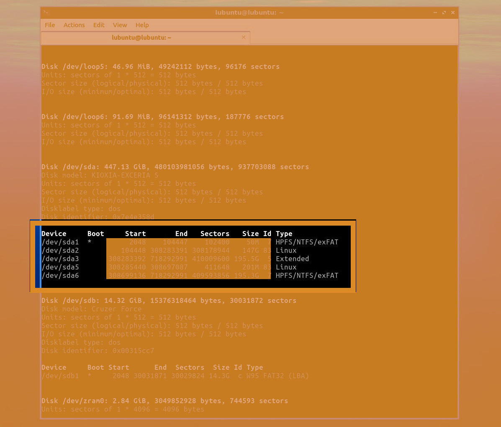
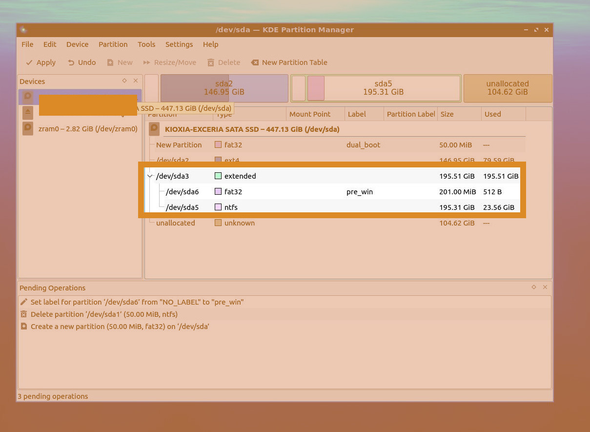
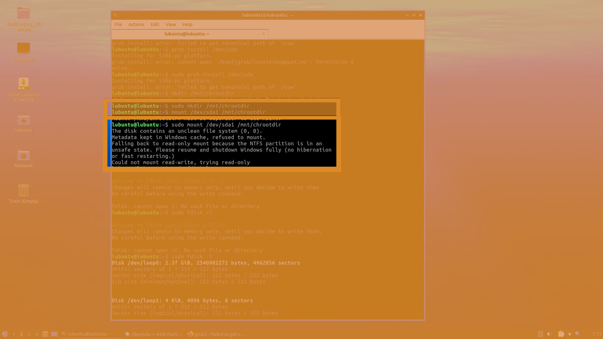
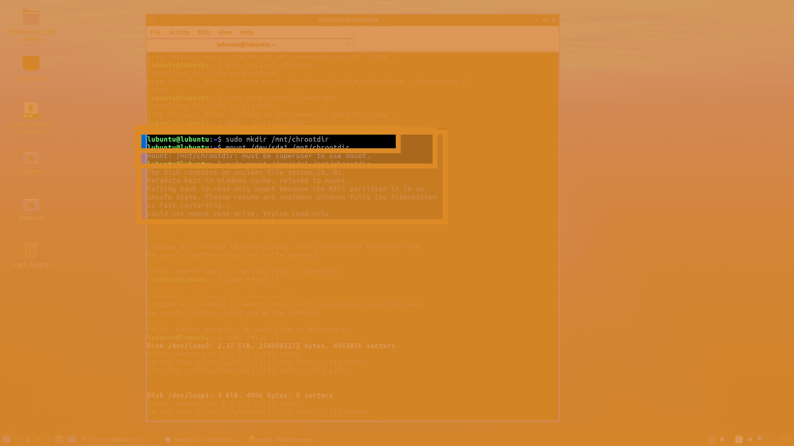
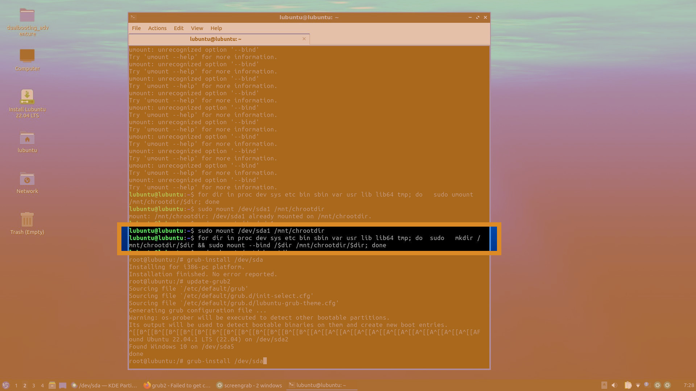
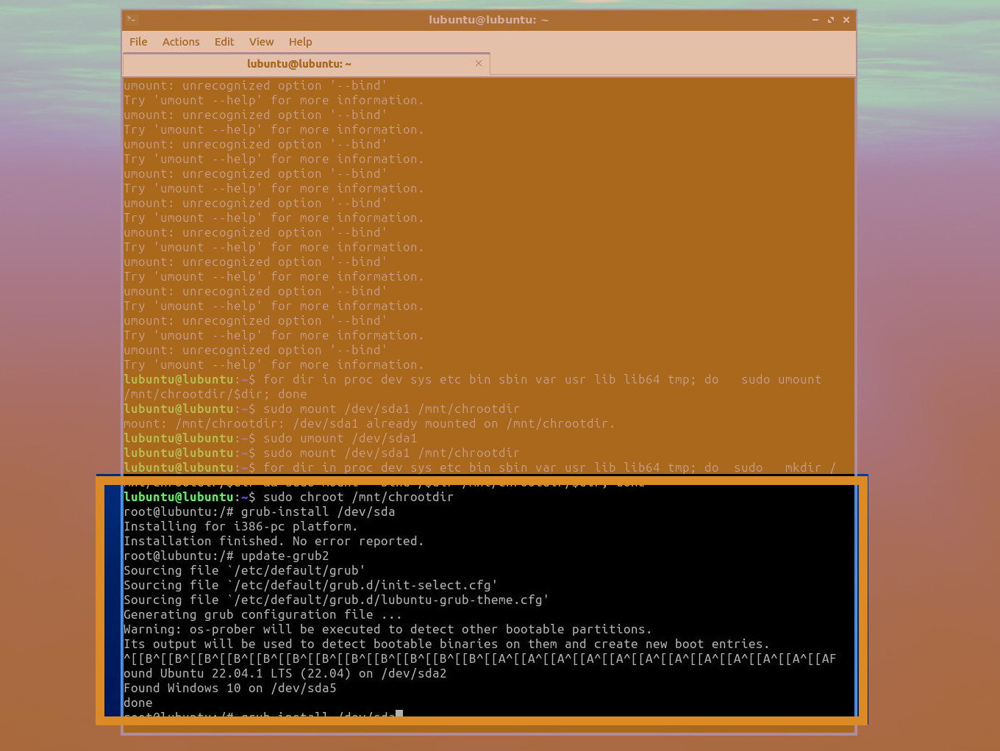

Ne gerek vardı?
Bir çok hem İngilizce hem Türkçe sayfada neyi nasıl yapacağınız anlatılıyor, bir de ben anlatayım.Bugünlerde hem Windows hem Linux kullanmak isteyen kimse kaldı mı? Windows geliştirici bilgisayarı gibi bir seçenek kullanmıyor Windows indirme seçeneklerine bakığınızda. Linux ise AutoDesk veya Adobe yazılımları kullandırmak konusunda Wine programına mahkum bırakıyor sizi hala. Yoksa Adobe ve AutoDesk sizi Windows'a mı mahkum bırakıyor demeliydim? Neyse bugün politika yapmak yerine ikili başlatma ya da dual-boot yapma çabalarım sırasında karşıma çıkanları ve bunların üstesinden geliş maceramı paylaşmak istiyorum.
Neye ihtiyacınız var?
Öncelikle bir Windows kalıbı yani ".iso" uzantılı bir dosya indirdim Windows'un sitesinden. Bir üniversite öğrencisi olduğum için etkinleştirme ya da activasyon için endişelenmeme gerek yoktu, yani bu yazıda yasa dışı yani illegal bir Windows kurulum yolu bulmayacaksınız. Windows için ".iso" dosyası indirdikten sonra bu kalıbı bilgisayarımda sadece bir Ubuntu yüklü olduğu için WoeUSB diye bir yazılım kullandım, 16 GB'lik bir USB belleği, Windows kurulum diski olarak kullanmak için. Disk imajını yani ".iso" dosyasını bir disk gibi görüp içinden çıkarılacakları kopyalamanıza izin veren programlardan değildi bu. O yöntemi denediğim halde başarısız olduğum için WoeUSB kullandım. Disk imajınızı yani ".iso" dosyanızı güzel bir şekilde gösterip, USB belleğinizi de yerini seçmenize büyük olasılıkla gerek kalmadan kullanabiliyorsunuz.
BIOS ile mücadelenizde kolaylıklar dilerim.
Disk kalıbınız USB belleğinize yazıldıktan sonra bilgisayarınızı BIOS denilen kurulum modunda başlatıp, Boot menüsü altında, External Disk gibi bir seçeneği en üst konuma ekranda görebileceğiniz yönergeleri kullanarak getirmeniz gerekiyor. BIOS modunda bir ekran görüntüsü alma seçeneği olmadığı için bunu görüntüyle paylaşamıyorum. Ancak bilgisayarınızın bir Assist tuşu varsa veya Del+F2 ya da Del+F8 gibi kombinasyonları kullanarak BIOS kurulumunuza erişip, sonrasında menülerde ok tuşlarıyla ilerleyerek yolunuzu bulmanız için size kolaylık diliyorum.
Windows kendi sistem başlatıcısını diskin başına yazar.
Zaten bütün mevzu Windows'un hadsizliğidir. Yine de kendisinden vazgeçmememiz için elinden geleni yapar. Dolayısıyla kendi sistem başlatıcısını diskin başına yazdığı için sonrasında Linux kurulumunuzun yöneticisi olan GRUB kayıtlarını bir daha diskin en başına sizin kaydederek güncellemeniz gerekecektir. Windows işletim sistemini kurarken ilerlemeyi yönetmenizin ardından, eğer kurulumun kendiliğinden Window sistem başlatıcısını diskin en başı olarak seçmesini engelleyecek bir hamle yapma olanağı bulursanız bunu hayata geçirin. Aksi takdirde bir Live yani canlı DVD veya USB belleğe ihtiyacınız olması olası.
Diskinizi derleyip toplamak için bir Live USB yapmaya daha ihtiyaç var.
Live USB yapmak için ben bir Lubuntu ".iso" su indirdim. Son zamanlarda Lubuntu stratejisi değişmiş olacak ki karşıma yaklaşık 2,5 GB boyutunda bir ISO dosyası çıktı. Yine de live, yani canlı, yani sabit diskinize kurulum gerektirmeden çalışıp, disk bölmenize izin verecek bir yazılım olduğu için ve Ubuntu kullanıcılığım nedeniyle kendisine duyduğum sempati dolayısıyla, Lubuntu'lu bir disk yaptım.
Lubuntu'lu Live diskinizi Windows veya Ubuntu ortamınızda yazdıktan sonra, daha önce Windows kurarken yaptığınız gibi sisteminizi yine External Disk seçeneğiyle USB diskinizden veya DVD'nizden başlatmanız gerekiyor. Bu sayede Lubuntu'nun Live usage seçeneğini kullanarak sisteminizin disk görünümünü şekillendirebilirsiniz veya bir Linux başlatıcısı olan GRUB'u ekleyebilirisiniz. İşte Lubuntu'dan bir görünüm:
Lubuntu kullanırken, Windows'un kurulu olduğunu tahmin ettiğim için dd komutu ile bir kopylama gerçekleştirip, diskin en başındaki bölmeyi Windows'un hemen öncesindeki bölmeye kopyalamayı denedim, ancak hiçbir şey sandığım gibi gitmeyince bütün Windows kurma işlemini baştan yapmam gerekti, neyse ki bazı silinmesini istemeyeceğim dosyaların bulunduğu Ubuntu kurulumuma bir zarar vermedim.
Lubuntu ile disklerin durumunu incelemek için fdisk -l komutu kullandım.
Lubuntu ile disklerin durumunu incelemek için yönetimsel araçların altında bulunabilecek KDE Partition Tool'u da kullandım.
"Canonical path of /cow" sorunu için kurulumu tekrarladım.
Lubuntu ile sda diski mount edip, GRUB sistemini bu diske kurmaya çalıştığımda aşağıdaki şekilde hatalı bir sonuç ortaya çıktı.
Bu çabayı sarfederken anladığım, Windows'un hemen öncesindeki kısımın da bir birincil kısım olarak bölünmesi gerektiğiydi. Eğer windows öncesi kısmı yani benim pre-windows diye adlandırdığım kısmı ve Windows'un asıl kurulu olduğu kısmı tek bir logical partition içinde bölümleyip bu şekilde Windows kurulumunu yaparsanız, ne yazık ki benim gibi işlemi tekrarlamak ve en fazla 4 parçaya izin verilen bir sistemde yine sadece ikinci işletim sistemi olarak kullanmak durumunda kalıyorsunuz. Hem de kurulumu ikinci kez beklemek durumunda kalıyorsunuz. Aşağıdaki "cow error" sonucuda GRUB kurmaya çalışırken aldığım hata.

"chrootdir" adında geçici bir dizin gerekti.
Her şeyi ikinci kez tekrar ederken, GRUB güncellemesine hazırlık olarak bir chrootdir dizini meydana getirdim.
Her şeyi ikinci kez tekrar ederken, sda diski içindeki dosyaları geçici bir chrootdir dizinine aşağıdaki şekilde bağlamanız gerekiyor.
"chrootdir" adlı bir dizine sda1 altındaki her alt dizini bağladıktan sonra root kullanıcısı olup, GRUB kayıtlarını tekrar kuruyoruz.
Umarım benzer sıkıntıları yaşayan birine yol gösterici olur.
stackoverflow.com cevaplarına teşekkürlerimle ve başarılar, kolaylıklar dileklerimle.